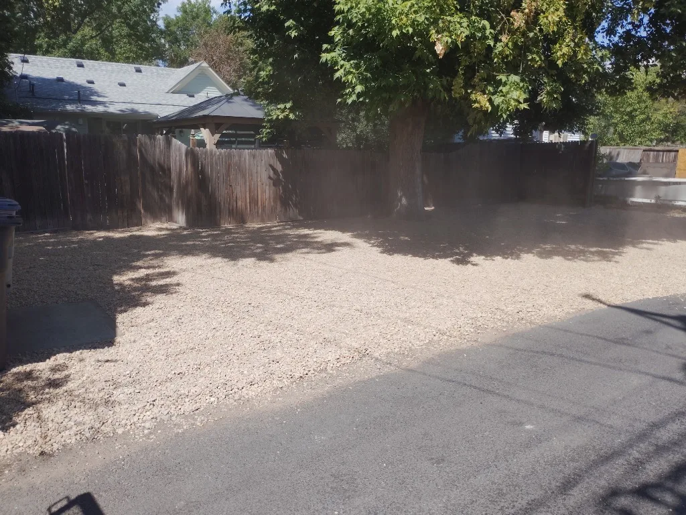
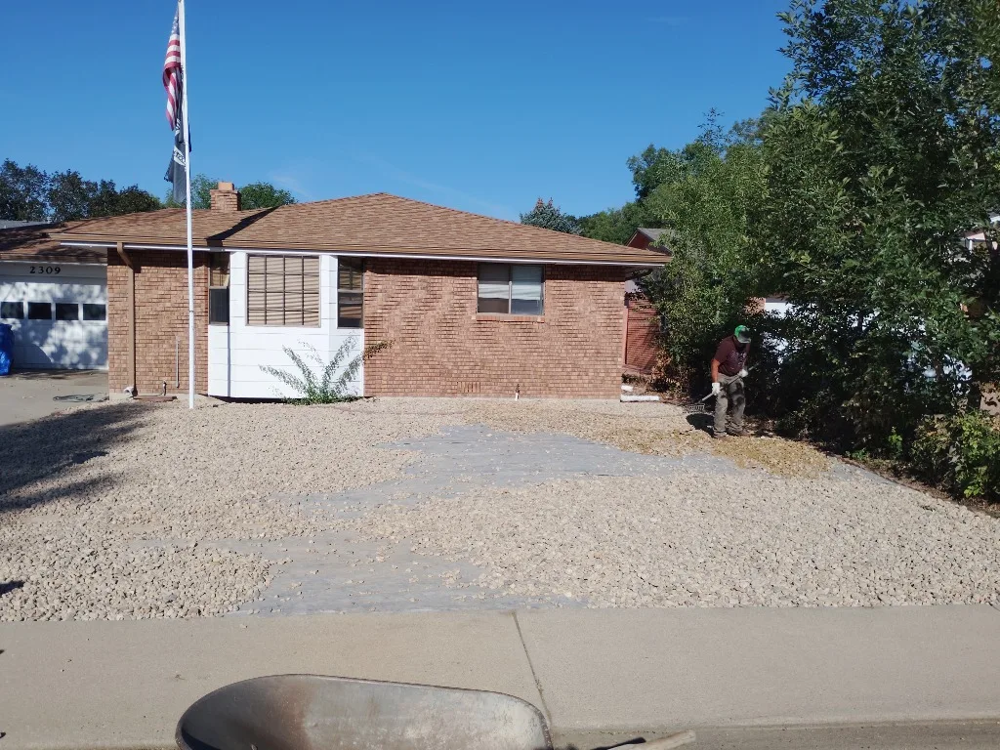

Real job photos
See the conditions, materials, and finished details from projects across the area.
Explore real property challenges across Longmont and Boulder County — from initial site issues to material selection, structural execution, and final transformations.
7 projects

A porch a full step above raw, uneven ground with no safe way down — bare soil, no path, and no planting anywhere around the front entry.
A finished, welcoming front entry — safe stone access, a thick new lawn, and layered planting beds that frame the house.
Create a more private, clearly defined backyard boundary with a practical access point.
A cohesive privacy screen that gives the Lakewood backyard a quieter, more finished feel.

A shady backyard with patchy, weed-infested turfgrass that wasted hundreds of gallons of water and required constant mowing without delivering aesthetic value.
A striking, zero-mow backyard garden oasis with vertical stone monoliths, dwarf blue spruce plantings, and high-contrast stone borders.

Setting property-line fence posts directly where a solid concrete walkway and driveway exist. Standard jackhammering alone risks shattering surrounding slabs and creating uneven jagged edges.
A beautiful, durable western red cedar property-line fence with custom gates, zero slab cracking, and long-lasting structural stability.

An unpaved side-yard area was overgrown with deep-rooted weeds and rutted dirt. Parking vehicles on raw earth caused severe mud pooling during snowmelts, washing dirt onto the driveway and creating an unkempt property eye-sore.
A heavy-capacity, low-maintenance parking pad that completely eliminates mud tracking, holds its shape under heavy vehicles, and cleanly integrates into the yard.

Late summer growth led to aggressive weed infestation sprouting through river rock beds, flagstone steppers, and turf borders. Organic leaf litter choked decorative stone pathways and dulled property lines.
Restored crisp, manicured landscape contrast, eliminated weed competition around hardscapes, and refreshed overall yard aesthetic.

An outdated front yard lawn suffered from patchy turf, heavy weed intrusion, high irrigation demands, and uneven grading. The homeowner desired a clean, water-wise xeriscape conversion that eliminated constant mowing.
A striking, low-maintenance front yard xeriscape that slashes water usage, eliminates lawn mowing, and delivers long-lasting curb appeal.
Until we have customer reviews to publish, explore the work itself and the details behind each build.
See the conditions, materials, and finished details from projects across the area.
Each project explains the challenge, execution, and result without filler.
Bring us the property and the problem. We’ll help you understand the next step.